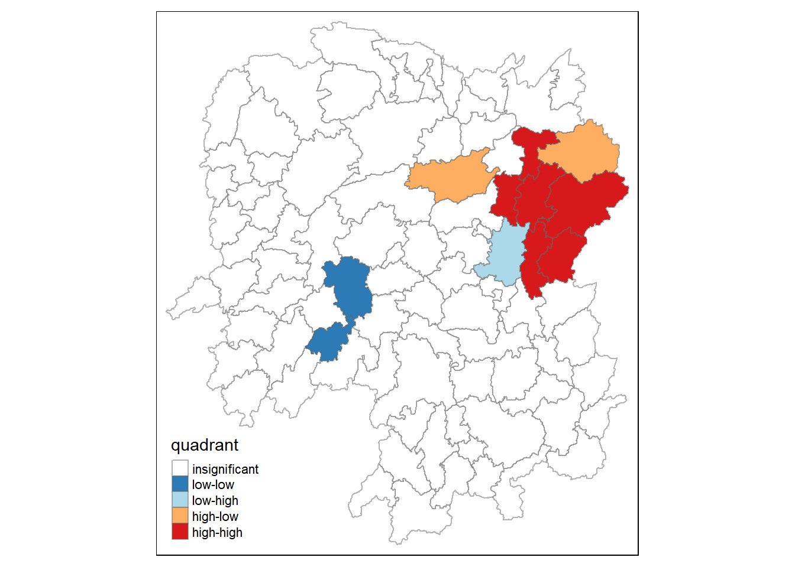
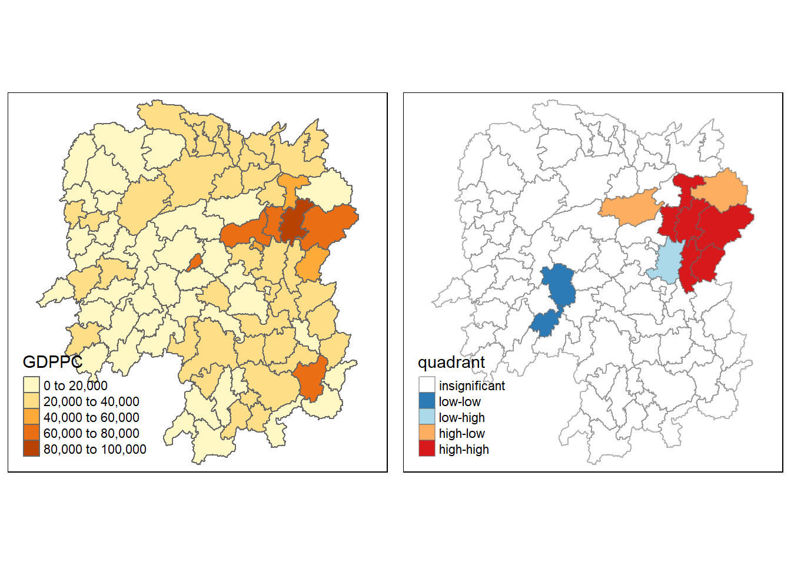

pacman::p_load(sf, spdep, tmap, tidyverse)Hands-On_Ex2
Overview
Learning how to compute Global and Local Measure of Spatial Autocorrelation (GLSA).
In spatial policy, one of the main development objective of the local government and planners is to ensure equal development in the province. The task is to apply appropriate spatial stastistical methods to discover if the development are evenly distributed geographically.
if the answer is No, then next question is whether there are signs of spatial clustering
- If the answer is Yes, then the follow on question is where are these clusters
Getting Started
Setting the analytical tools
Importing the data into the r environment
hunan <- st_read(dsn = "data/geospatial",
layer = "Hunan")Reading layer `Hunan' from data source
`C:\zer0nemesis\ISSS624\Hands-On_Ex\Hands-On_Ex2\data\geospatial'
using driver `ESRI Shapefile'
Simple feature collection with 88 features and 7 fields
Geometry type: POLYGON
Dimension: XY
Bounding box: xmin: 108.7831 ymin: 24.6342 xmax: 114.2544 ymax: 30.12812
Geodetic CRS: WGS 84hunan2012 <- read_csv("data/aspatial/Hunan_2012.csv")Rows: 88 Columns: 29
── Column specification ────────────────────────────────────────────────────────
Delimiter: ","
chr (2): County, City
dbl (27): avg_wage, deposite, FAI, Gov_Rev, Gov_Exp, GDP, GDPPC, GIO, Loan, ...
ℹ Use `spec()` to retrieve the full column specification for this data.
ℹ Specify the column types or set `show_col_types = FALSE` to quiet this message.Performing relational join
hunan <- left_join(hunan, hunan2012)Joining, by = "County"Visualising regional development indicator
Preparing a basemap and choropleth map showing the distribution of GDPPC 2012 by using qtm()
equal <- tm_shape(hunan)+
tm_fill("GDPPC",
n=5,
style="equal")+
tm_borders(alpha=0.5)+
tm_layout(main.title = "Equal interval classification")
quantile <- tm_shape(hunan)+
tm_fill("GDPPC",
n=5,
style = "quantile")+
tm_borders(alpha=0.5)+
tm_layout(main.title = "Equal quantile classification")
tmap_arrange(equal,
quantile,
asp=1,
ncol=2)
Global spatial autocorrelation
Computing global spatial autocorrelation statistics and performing spatial complete randomness test for global spatial autocorrelation
Computing contiguity spatial weights
First, construct spatial weights of the study area, which will be used to define the neighbourhood relationships between geographical units (aka counties) in the study area
Computing Queen contiguity weight matrix
the summary report shows there are 88 area units in Hunan, most connected area unit has 11 neighbours, while two area units only have 1 neighbour
wm_q <- poly2nb(hunan,
queen = TRUE)
summary(wm_q)Neighbour list object:
Number of regions: 88
Number of nonzero links: 448
Percentage nonzero weights: 5.785124
Average number of links: 5.090909
Link number distribution:
1 2 3 4 5 6 7 8 9 11
2 2 12 16 24 14 11 4 2 1
2 least connected regions:
30 65 with 1 link
1 most connected region:
85 with 11 linksRow-standardised weights matrix
Assigning weights to each neighbouring polygon (e.g. each neighbouring polygon will be assigned equal weight (style = “W”), by assigning fraction 1/(no. of neighbours), then summing the weighted income values
Drawback in that polygons along the edges of the study area will base their lagged values on fewer polygons thus potentially over- or under- estimating the true nature of the spatial auto-correlation (other more robust options are available, e.g. style = “B”)
zero.policy=TRUE option allows for list of non-neighbours
rswm_q <- nb2listw(wm_q,
style="W",
zero.policy = TRUE)
rswm_qCharacteristics of weights list object:
Neighbour list object:
Number of regions: 88
Number of nonzero links: 448
Percentage nonzero weights: 5.785124
Average number of links: 5.090909
Weights style: W
Weights constants summary:
n nn S0 S1 S2
W 88 7744 88 37.86334 365.9147Input of nb2listw() must be an object of class nb. The syntax has two major arguments, namely style and zero.policy:
Style: can take the following values:
“W” - row standardised (sums over all links to n)
“B” - basic binary coding
“C” - globally standardised (sums over all links to n)
“U” - equal to C divided by number of neighbours (sums over all links to unity)
“minmax” - divides the weights by the minimum of the maximum row sums and maximum column sums of the input weights (similar to “C” and “U” styles)
“S” - variance-stabilizing coding scheme
zero.policy: if set to TRUE, weights vectors of zero length are inserted for regions without neighbour in the neighbours list, which in turn generate lag values of zero.
Global spatial autocorrelation: Moran’s I
Perfoming Moran’s I statistical testing using moran.test()
moran.test(hunan$GDPPC,
listw = rswm_q,
zero.policy = TRUE,
na.action = na.omit)
Moran I test under randomisation
data: hunan$GDPPC
weights: rswm_q
Moran I statistic standard deviate = 4.7351, p-value = 1.095e-06
alternative hypothesis: greater
sample estimates:
Moran I statistic Expectation Variance
0.300749970 -0.011494253 0.004348351 Computing Monte Carlo Moran’s I
Performs permutation test for Moran’s I statistic using moran.mc() (1,000 simulations will be performed)
set.seed(1234)
bperm = moran.mc(hunan$GDPPC,
listw = rswm_q,
nsim = 999,
zero.policy = TRUE,
na.action = na.omit)
bperm
Monte-Carlo simulation of Moran I
data: hunan$GDPPC
weights: rswm_q
number of simulations + 1: 1000
statistic = 0.30075, observed rank = 1000, p-value = 0.001
alternative hypothesis: greaterVisualising Monte Carlo Moran’s I
Examining simulated Moran’s I test statistics in greater detail, by plotting the distribution of the statistical values as a histogram
mean(bperm$res[1:999])[1] -0.01504572var(bperm$res[1:999])[1] 0.004371574summary(bperm$res[1:999]) Min. 1st Qu. Median Mean 3rd Qu. Max.
-0.18339 -0.06168 -0.02125 -0.01505 0.02611 0.27593 hist(bperm$res,
freq = TRUE,
breaks=20,
xlab = "Simulated Moran's I")
abline(v=0,
col="red")
Global spatial autocorrelation: Geary’s
Performing Geary’s c statistics
Geary’s c test
Perfoming Geary’s C test for spatial autocorrelation using geary.test()
geary.test(hunan$GDPPC, listw=rswm_q)
Geary C test under randomisation
data: hunan$GDPPC
weights: rswm_q
Geary C statistic standard deviate = 3.6108, p-value = 0.0001526
alternative hypothesis: Expectation greater than statistic
sample estimates:
Geary C statistic Expectation Variance
0.6907223 1.0000000 0.0073364 Computing Monte Carlo Geary’s C
Performing permutation test for Geary’s C statistics using geary.mc()
set.seed(1234)
bperm=geary.mc(hunan$GDPPC,
listw=rswm_q,
nsim=999)
bperm
Monte-Carlo simulation of Geary C
data: hunan$GDPPC
weights: rswm_q
number of simulations + 1: 1000
statistic = 0.69072, observed rank = 1, p-value = 0.001
alternative hypothesis: greaterVisualising Monte Carlo Geary’s C
mean(bperm$res[1:999])[1] 1.004402var(bperm$res[1:999])[1] 0.007436493summary(bperm$res[1:999]) Min. 1st Qu. Median Mean 3rd Qu. Max.
0.7142 0.9502 1.0052 1.0044 1.0595 1.2722 hist(bperm$res, freq=TRUE, breaks=20, xlab="Simulated Geary C")
abline(v=1, col="red")Spatial Correlogram
Examining patterns of spatial autocorrelation or model residuals. They show how correlated are pairs of spatial observations when distance(lag) is increased between them. They are plots of some index of autocorrelation against distance.
Compute Moran’s I correlogram
Computing a 6-lag spatial correlogram. The global spatial autocorrelation used in Moran’s I, then plot the output using plot()
MI_corr <- sp.correlogram(wm_q,
hunan$GDPPC,
order=6,
method="I",
style="W")
plot(MI_corr)
Note: not all autocorrelation are statistically significant. Hence it is important to examine the full analysis
print(MI_corr)Spatial correlogram for hunan$GDPPC
method: Moran's I
estimate expectation variance standard deviate Pr(I) two sided
1 (88) 0.3007500 -0.0114943 0.0043484 4.7351 2.189e-06 ***
2 (88) 0.2060084 -0.0114943 0.0020962 4.7505 2.029e-06 ***
3 (88) 0.0668273 -0.0114943 0.0014602 2.0496 0.040400 *
4 (88) 0.0299470 -0.0114943 0.0011717 1.2107 0.226015
5 (88) -0.1530471 -0.0114943 0.0012440 -4.0134 5.984e-05 ***
6 (88) -0.1187070 -0.0114943 0.0016791 -2.6164 0.008886 **
---
Signif. codes: 0 '***' 0.001 '**' 0.01 '*' 0.05 '.' 0.1 ' ' 1Compute Geary’s C correlogram and plot
Computing a 6-lag spatial correlogram, using sp.correlogram(). The global spatial autocorrelation used in Geary’s C and plotting its output using plot()
GC_corr <- sp.correlogram(wm_q,
hunan$GDPPC,
order=6,
method="C",
style="W")
plot(GC_corr)
Similarly, printing the analysis report
print(GC_corr)Spatial correlogram for hunan$GDPPC
method: Geary's C
estimate expectation variance standard deviate Pr(I) two sided
1 (88) 0.6907223 1.0000000 0.0073364 -3.6108 0.0003052 ***
2 (88) 0.7630197 1.0000000 0.0049126 -3.3811 0.0007220 ***
3 (88) 0.9397299 1.0000000 0.0049005 -0.8610 0.3892612
4 (88) 1.0098462 1.0000000 0.0039631 0.1564 0.8757128
5 (88) 1.2008204 1.0000000 0.0035568 3.3673 0.0007592 ***
6 (88) 1.0773386 1.0000000 0.0058042 1.0151 0.3100407
---
Signif. codes: 0 '***' 0.001 '**' 0.01 '*' 0.05 '.' 0.1 ' ' 1Cluster and outlier analysis
Local indicators of spatial association(aka LISA) are statistics that evaluate the existence of clusters in the spatial arrangement of a given variable. For instance, if the study is on cancer rates among census tracts in a given city local clusters in the rates, means there are areas that have higher r lower rates is to be expected by chance alone
Computing local Moran’s I
Computing local Moran’s I using localmoran(). It computes li values, given a set of zi alues and a listw object providing neighbour weighting information for the polygon associated with the zi values
fips <- order(hunan$County)
localMI <- localmoran(hunan$GDPPC, rswm_q)
head(localMI) Ii E.Ii Var.Ii Z.Ii Pr(z != E(Ii))
1 -0.001468468 -2.815006e-05 4.723841e-04 -0.06626904 0.9471636
2 0.025878173 -6.061953e-04 1.016664e-02 0.26266425 0.7928094
3 -0.011987646 -5.366648e-03 1.133362e-01 -0.01966705 0.9843090
4 0.001022468 -2.404783e-07 5.105969e-06 0.45259801 0.6508382
5 0.014814881 -6.829362e-05 1.449949e-03 0.39085814 0.6959021
6 -0.038793829 -3.860263e-04 6.475559e-03 -0.47728835 0.6331568localmoran() returns a matrix of values whose columns are:
li : local Moran’s I statistics
E.li : expectation of local moran statistics under randomisation hypothesis
Var.li : variance of local moran statistics under randomisation hypothesis
Z.li : standard deviation of local moran statistics
Pr() : p-values of local moran statistics
printCoefmat(data.frame(localMI[fips], row.names=hunan$County[fips]), check.names=FALSE) localMI.fips.
Anhua -0.0225
Anren -0.3993
Anxiang -0.0015
Baojing 0.3474
Chaling 0.0206
Changning 0.0000
Changsha 4.9022
Chengbu 0.7372
Chenxi 0.1454
Cili 0.0732
Dao 0.2142
Dongan 0.1521
Dongkou 0.5292
Fenghuang 0.1801
Guidong -0.5916
Guiyang 0.1824
Guzhang 0.2847
Hanshou 0.0259
Hengdong 0.0100
Hengnan 0.0281
Hengshan -0.0058
Hengyang 0.0630
Hongjiang 0.1879
Huarong -0.0154
Huayuan 0.0838
Huitong 0.2600
Jiahe -0.1243
Jianghua 0.2865
Jiangyong 0.2434
Jingzhou 0.1827
Jinshi -0.0120
Jishou -0.2868
Lanshan 0.0633
Leiyang 0.0116
Lengshuijiang -1.7903
Li 0.0010
Lianyuan -0.1467
Liling 1.3774
Linli 0.0148
Linwu -0.0025
Linxiang 0.0659
Liuyang 3.3688
Longhui 0.8080
Longshan 0.7566
Luxi 0.1818
Mayang 0.2185
Miluo 1.8704
Nan -0.0096
Ningxiang 1.5607
Ningyuan 0.2091
Pingjiang -0.9896
Qidong 0.1181
Qiyang 0.0620
Rucheng -0.3699
Sangzhi 0.2505
Shaodong -0.0327
Shaoshan 2.1223
Shaoyang 0.5950
Shimen -0.0388
Shuangfeng 0.0093
Shuangpai 0.0806
Suining 0.3758
Taojiang -0.2539
Taoyuan 0.0147
Tongdao 0.4648
Wangcheng 4.4220
Wugang 0.7100
Xiangtan 0.2453
Xiangxiang 0.2627
Xiangyin 0.5453
Xinhua 0.1181
Xinhuang 0.1573
Xinning 0.6893
Xinshao 0.0576
Xintian -0.0074
Xupu 0.3241
Yanling -0.0690
Yizhang -0.2684
Yongshun 0.6306
Yongxing 0.4341
You 0.0788
Yuanjiang 0.0002
Yuanling 0.0087
Yueyang 0.0412
Zhijiang 0.1048
Zhongfang -0.2268
Zhuzhou 0.3286
Zixing -0.7685Mapping the local Moran’s I
First, append the local Moran’s I dataframe onto hunan SpatialPolygonDataFrame
hunan.localMI <- cbind(hunan, localMI) %>%
rename(Pr.Ii = Pr.z....E.Ii..)Mapping local Moran’s I values
Plotting local Moran’s I vlaues using choropleth mapping functions
tm_shape(hunan.localMI)+
tm_fill(col = "Ii",
style = "pretty",
palette = "RdBu",
title = "local moran statistics")+
tm_borders(alpha=0.5)Variable(s) "Ii" contains positive and negative values, so midpoint is set to 0. Set midpoint = NA to show the full spectrum of the color palette.
Mapping local Moran’s I p-values
While the choropleth shows there is evidence for both positive and negative Ii values, it is useful to consider p-values for each of these values
tm_shape(hunan.localMI)+
tm_fill(col="Pr.Ii",
breaks = c(-Inf, 0.001, 0.01, 0.05, 0.1, Inf),
palette = "-Blues",
title = "local Moran's I p-values")+
tm_borders(alpha=0.5)
Mapping both local Moran’s I values and p-values
For better interpretation, it is better to plot both loal Moran’s I values map and its corresponding p-values next to each other
localMI.map <- tm_shape(hunan.localMI)+
tm_fill(col = "Ii",
style="pretty",
title = "local moran statistics")+
tm_borders(alpha = 0.5)
pvalue.map <- tm_shape(hunan.localMI)+
tm_fill(col = "Ii",
breasks = c(-Inf, 0.001, 0.01, 0.05, 0.1, Inf),
palette = "-Blues",
title = "local Moran's I p-values")+
tm_borders(alpha=0.5)
tmap_arrange(localMI.map, pvalue.map, asp=1, ncol=2)Variable(s) "Ii" contains positive and negative values, so midpoint is set to 0. Set midpoint = NA to show the full spectrum of the color palette.Creating a LISA Cluster Map
LISA cluster map shows the significant locations color coded by type of spatial autocorrelation. First step is to plot the Moran scatterplot.
Plotting Moran scatterplot
Moran scatterplot is an illustration of the relationship between the values of the chosen attribute at each location and the average value of the same attribute at neighbouring locations.
Note that the plot is split in 4 quadrants. Top right corner belongs to areas that have GDPPC and are surrounded by other areas that have the average level of GDPPC (these are the high-high locations in the lesson slide).
nci <- moran.plot(hunan$GDPPC, rswm_q,
labels=as.character(hunan$County),
xlab="GDPPC 2012",
ylab = "Spatially Lag GDPPC 2012")
Plotting Moran scatterplot with standardised variable
Centre and scales the variable using scale(). Centering is done by subtracting the mean(omitting the NAs) the corresponding colums, and scaling is done by dividing the (centered) variable by their standard deviations.
The as.vector at the end makes sure that the data type is a vector, that maps neatly into the dataframe
hunan$Z.GDPPC <- scale(hunan$GDPPC) %>% as.vectorPlotting the Moran scatterplot again
nci2 <- moran.plot(hunan$GDPPC, rswm_q,
labels=as.character(hunan$County),
xlab="z-GDPPC 2012",
ylab= "Spatially Lag z-GDPPC 2012")Preparing LISA map classes
quadrant <- vector(mode="numeric", length=nrow(localMI))Next, center the variable of interests around its mean
DV <- hunan$GDPPC - mean(hunan$GDPPC)Followed by centering the local Moran’s around the mean
C_mI <- localMI[,1] - mean(localMI[,1])Setting a statistical significance level for the local Moran
signif <- 0.05Four command lines to define high-high, low-low, low-high, high-low categories
quadrant[DV > 0 & C_mI>0] <-4
quadrant[DV < 0 & C_mI<0] <-3
quadrant[DV > 0 & C_mI<0] <-2
quadrant[DV < 0 & C_mI>0] <-1Lastly, place non-significant Moran in category 0
quadrant[localMI[,5]>signif] <-0we can also combine all the steps
quadrant <- vector(mode="numeric",length=nrow(localMI))
DV <- hunan$GDPPC - mean(hunan$GDPPC)
C_mI <- localMI[,1] - mean(localMI[,1])
signif <- 0.05
quadrant[DV > 0 & C_mI>0] <-4
quadrant[DV < 0 & C_mI<0] <-3
quadrant[DV > 0 & C_mI<0] <-2
quadrant[DV < 0 & C_mI>0] <-1
quadrant[localMI[,5]>signif] <- 0Plotting LISA map
hunan.localMI$quadrant <- quadrant
colors <- c("#ffffff", "#2c7bb6", "#abd9e9", "#fdae61", "#d7191c")
clusters <- c("insignificant", "low-low", "low-high", "high-low", "high-high")
tm_shape(hunan.localMI)+
tm_fill(col = "quadrant",
style = "cat",
palette = colors[c(sort(unique(quadrant)))+1],
labels = clusters[c(sort(unique(quadrant)))+1],
popup.vars = c(""))+
tm_view(set.zoom.limits = c(11,17))+
tm_borders(alpha = 0.5)
For effective interpretation, it is better to plot both local Moran’s I values map and its corresponding p-values next to each other
gdppc <- qtm(hunan, "GDPPC")
hunan.localMI$quadrant <- quadrant
colors <- c("#ffffff", "#2c7bb6", "#abd9e9", "#fdae61", "#d7191c")
clusters <- c("insignificant", "low-low", "low-high", "high-low", "high-high")
LISAmap <- tm_shape(hunan.localMI)+
tm_fill(col = "quadrant",
style = 'cat',
palette = colors[c(sort(unique(quadrant)))+1],
labels = clusters[c(sort(unique(quadrant)))+1],
popup.vars = c(""))+
tm_view(set.zoom.limits = c(11,17))+
tm_borders(alpha=0.5)
tmap_arrange(gdppc, LISAmap, asp=1, ncol=2)
Hot spot and cold spot area analysis
Besides detecting clusters and outliers, localised spatial statistics can also detect hot spot and/or cold spot areas
“Hot spot” generally used across disciplines to describe a region or value that is higher relative to its surroundings
Getis and Ord’s G-statistics
Getis and Ord’s G is an alternative spatial statistics to detect spatial anomalies. It looks at neighbours within a defined proximity to identify where either high or low values clusters spatially. Statistically significant hot spots are recognised as areas of high values where other areas within a neighbourhood also share high values too
Analysis consists three steps:
Deriving spatial weight matrix
Computing Gi statistics
Mapping Gi statistics
Deriving distance-based weight matrix
First, define a new set of neighbours. For Getis-Ord, define neighbours based on distance. Two types of distance-based proximity matrix:
fixed distance weight matrix
adaptive distance weight matrix
Deriving centroid
First, points are needed to associate with each polygon. It will more complicated than just running st_centroid() on the sf object: us.bound. We need the coordinates in a separate data frame for this to work. To do this, use a mapping function, which will apply a given function to each element of a vector and returns a vector of the same length. Our input vector will be the geometry column of us.bound. Our function will be st_centroid(). We will be using map_dbl variation of map from the purrr package.
To get longitude values, map the st_centroid() function over the geometry column of us.bound and access the longitude value through double bracket notation [[]] and 1. This will get only the longitude, which is the first value in each centroid.
longitude <- map_dbl(hunan$geometry, ~st_centroid(.x)[[1]])Do the same for latitude with one key difference, access the second value per each centroid with [[2]].
latitude <- map_dbl(hunan$geometry, ~st_centroid(.x)[[2]])Use cbind to put longitude and latitude into the same object.
coords <- cbind(longitude, latitude)Determine the cut off distance
Firstly, determine the upper limit for distance band by using the steps below:
Return a matrix with the indices of points belonging to the set of the k nearest neighbours of each other by using knearneigh()
Convert the knn object returned by knearneigh() into a neighbours list of class nb with a list of integer vectors containing neighbour region number ids by using knn2nb()
Return the length of neighbour relationship edges by using nbdists(). The function returns in the units of the coordinates if the coordinates are projected, in km otherwise.
Remove the list structure of the returned object by using unlist().
The summary report shows that the largest first nearest neighbour distance is 61.79 km, so using this as the upper threshold gives certainty that all units will have at least one neighbour.
k1 <- knn2nb(knearneigh(coords))
k1dists <- unlist(nbdists(k1, coords, longlat = TRUE))
summary(k1dists) Min. 1st Qu. Median Mean 3rd Qu. Max.
24.79 32.57 38.01 39.07 44.52 61.79 Computing fixed distance weight matrix
Now, compute the distance weight matrix by using dnearneigh()
wm_d62 <- dnearneigh(coords, 0, 62, longlat = TRUE)
wm_d62Neighbour list object:
Number of regions: 88
Number of nonzero links: 324
Percentage nonzero weights: 4.183884
Average number of links: 3.681818 Next, nb2listw() is used to convert the nb object into spatial weights object. The output spatial weights object is called wm62_lw.
wm62_lw <- nb2listw(wm_d62, style = 'B')
summary(wm62_lw)Characteristics of weights list object:
Neighbour list object:
Number of regions: 88
Number of nonzero links: 324
Percentage nonzero weights: 4.183884
Average number of links: 3.681818
Link number distribution:
1 2 3 4 5 6
6 15 14 26 20 7
6 least connected regions:
6 15 30 32 56 65 with 1 link
7 most connected regions:
21 28 35 45 50 52 82 with 6 links
Weights style: B
Weights constants summary:
n nn S0 S1 S2
B 88 7744 324 648 5440Computing adaptive distance weight matrix
One of the characteristics of fixed distance weight matrix is that more densely settled areas (usually the urban areas) tend to have more neighbours and the less densely settled areas (usually the rural counties) tend to have lesser neighbours. Having many neighbours smoothes the neighbour relationship across more neighbours.
It is possible to control the numbers of neighbours directly using k-nearest neighbours, either accepting asymmetric neighbours or imposing symmetry
knn <- knn2nb(knearneigh(coords, k=8))
knnNeighbour list object:
Number of regions: 88
Number of nonzero links: 704
Percentage nonzero weights: 9.090909
Average number of links: 8
Non-symmetric neighbours listNext, nb2listw() is used to convert the nb object into spatial weights object.
knn_lw <- nb2listw(knn, style = 'B')
summary(knn_lw)Characteristics of weights list object:
Neighbour list object:
Number of regions: 88
Number of nonzero links: 704
Percentage nonzero weights: 9.090909
Average number of links: 8
Non-symmetric neighbours list
Link number distribution:
8
88
88 least connected regions:
1 2 3 4 5 6 7 8 9 10 11 12 13 14 15 16 17 18 19 20 21 22 23 24 25 26 27 28 29 30 31 32 33 34 35 36 37 38 39 40 41 42 43 44 45 46 47 48 49 50 51 52 53 54 55 56 57 58 59 60 61 62 63 64 65 66 67 68 69 70 71 72 73 74 75 76 77 78 79 80 81 82 83 84 85 86 87 88 with 8 links
88 most connected regions:
1 2 3 4 5 6 7 8 9 10 11 12 13 14 15 16 17 18 19 20 21 22 23 24 25 26 27 28 29 30 31 32 33 34 35 36 37 38 39 40 41 42 43 44 45 46 47 48 49 50 51 52 53 54 55 56 57 58 59 60 61 62 63 64 65 66 67 68 69 70 71 72 73 74 75 76 77 78 79 80 81 82 83 84 85 86 87 88 with 8 links
Weights style: B
Weights constants summary:
n nn S0 S1 S2
B 88 7744 704 1300 23014Computing Gi statistics
Gi statistics using fixed distance
The output of localG() is a vector of G or Gstar values, with attributes “gstari” set to TRUE or FALSE, “call” set to the function call, and class “localG”.
The Gi statistics is represented as a Z-score. Greater values represent a greater intensity of clustering and the direction (positive or negative) indicates high or low clusters.
fips <- order(hunan$County)
gi.fixed <- localG(hunan$GDPPC, wm62_lw)
gi.fixed [1] 0.436075843 -0.265505650 -0.073033665 0.413017033 0.273070579
[6] -0.377510776 2.863898821 2.794350420 5.216125401 0.228236603
[11] 0.951035346 -0.536334231 0.176761556 1.195564020 -0.033020610
[16] 1.378081093 -0.585756761 -0.419680565 0.258805141 0.012056111
[21] -0.145716531 -0.027158687 -0.318615290 -0.748946051 -0.961700582
[26] -0.796851342 -1.033949773 -0.460979158 -0.885240161 -0.266671512
[31] -0.886168613 -0.855476971 -0.922143185 -1.162328599 0.735582222
[36] -0.003358489 -0.967459309 -1.259299080 -1.452256513 -1.540671121
[41] -1.395011407 -1.681505286 -1.314110709 -0.767944457 -0.192889342
[46] 2.720804542 1.809191360 -1.218469473 -0.511984469 -0.834546363
[51] -0.908179070 -1.541081516 -1.192199867 -1.075080164 -1.631075961
[56] -0.743472246 0.418842387 0.832943753 -0.710289083 -0.449718820
[61] -0.493238743 -1.083386776 0.042979051 0.008596093 0.136337469
[66] 2.203411744 2.690329952 4.453703219 -0.340842743 -0.129318589
[71] 0.737806634 -1.246912658 0.666667559 1.088613505 -0.985792573
[76] 1.233609606 -0.487196415 1.626174042 -1.060416797 0.425361422
[81] -0.837897118 -0.314565243 0.371456331 4.424392623 -0.109566928
[86] 1.364597995 -1.029658605 -0.718000620
attr(,"cluster")
[1] Low Low High High High High High High High Low Low High Low Low Low
[16] High High High High Low High High Low Low High Low Low Low Low Low
[31] Low Low Low High Low Low Low Low Low Low High Low Low Low Low
[46] High High Low Low Low Low High Low Low Low Low Low High Low Low
[61] Low Low Low High High High Low High Low Low High Low High High Low
[76] High Low Low Low Low Low Low High High Low High Low Low
Levels: Low High
attr(,"gstari")
[1] FALSE
attr(,"call")
localG(x = hunan$GDPPC, listw = wm62_lw)
attr(,"class")
[1] "localG"Next, join the Gi values to their corresponding hunan sf data frame by using the code chunk below. The code chunk will perform three tasks. First, it convert the output vector (i.e. gi.fixed) into r matrix object by using as.matrix(). Next, cbind() is used to join hunan@data and gi.fixed matrix to produce a new SpatialPolygonDataFrame called hunan.gi. Lastly, the field name of the gi values is renamed to gstat_fixed by using rename().
hunan.gi <- cbind(hunan, as.matrix(gi.fixed)) %>%
rename(gstat_fixed = as.matrix.gi.fixed.)Mapping Gi values with fixed distance weights
Map the Gi values derived using fixed distance weight matrix.
gdppc <- qtm(hunan, "GDPPC")
Gimap <-tm_shape(hunan.gi) +
tm_fill(col = "gstat_fixed",
style = "pretty",
palette="-RdBu",
title = "local Gi") +
tm_borders(alpha = 0.5)
tmap_arrange(gdppc, Gimap, asp=1, ncol=2)Variable(s) "gstat_fixed" contains positive and negative values, so midpoint is set to 0. Set midpoint = NA to show the full spectrum of the color palette.
Gi statistics using adaptive distance
Compute the Gi values for GDPPC2012 by using an adaptive distance weight matrix (i.e knb_lw)
fips <- order(hunan$County)
gi.adaptive <- localG(hunan$GDPPC, knn_lw)
hunan.gi <- cbind(hunan, as.matrix(gi.adaptive)) %>%
rename(gstat_adaptive = as.matrix.gi.adaptive.)Mapping Gi values with adaptive distance weights
Visualise the locations of hot spot and cold spot areas. The choropleth mapping functions of tmap package will be used to map the Gi values derived using fixed distance weight matrix.
gdppc<- qtm(hunan, "GDPPC")
Gimap <- tm_shape(hunan.gi) +
tm_fill(col = "gstat_adaptive",
style = "pretty",
palette="-RdBu",
title = "local Gi") +
tm_borders(alpha = 0.5)
tmap_arrange(gdppc,
Gimap,
asp=1,
ncol=2)Variable(s) "gstat_adaptive" contains positive and negative values, so midpoint is set to 0. Set midpoint = NA to show the full spectrum of the color palette.